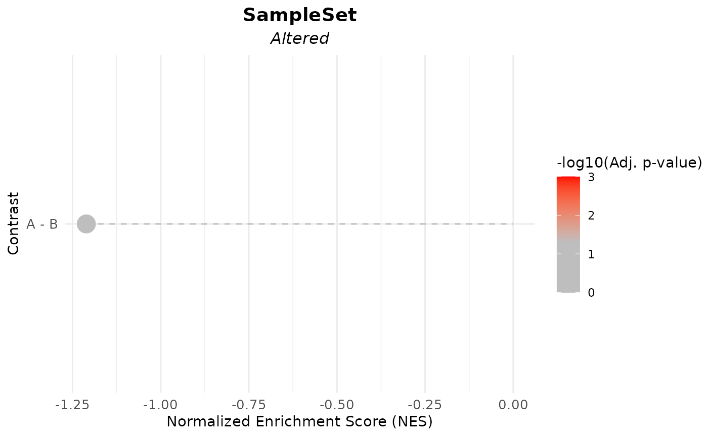

This function assesses the association between gene expression (or another molecular score) and metadata variables using differential expression (DE) analysis and Gene Set Enrichment Analysis (GSEA). It generates all possible contrasts for categorical variables and uses linear modeling for continuous variables.
Usage
GSEA_VariableAssociation(
data,
metadata,
cols,
stat = NULL,
mode = c("simple", "medium", "extensive"),
gene_set,
nonsignif_color = "grey",
signif_color = "red",
saturation_value = NULL,
sig_threshold = 0.05,
widthlabels = 18,
labsize = 10,
titlesize = 14,
pointSize = 5
)Arguments
- data
A matrix or data frame containing gene expression data, where rows represent genes and columns represent samples.
- metadata
A data frame containing sample metadata with at least one column corresponding to the variables of interest.
- cols
A character vector specifying the metadata columns (variables) to analyse.
- stat
Optional. The statistic to use for ranking genes before GSEA. If
NULL, it is automatically determined based on the gene set:"B"for gene sets with no known direction (vectors)."t"for unidirectional or bidirectional gene sets (data frames).If provided, this argument overrides the automatic selection.
- mode
A character string specifying the contrast generation method for categorical variables. Options:
"simple","medium","extensive". Default is"simple".- gene_set
A named list defining the gene sets for GSEA. (Required)
If using unidirectional gene sets, provide a list where each element is a vector of gene names representing a signature.
If using bidirectional gene sets, provide a list where each element is a data frame:
The first column should contain gene names.
The second column should indicate the expected direction of enrichment (
1for upregulated,-1for downregulated).
- nonsignif_color
A string specifying the color for the middle of the adjusted p-value gradient. Default is
"white". Lower limit correspond to the value ofsig_threshold.- signif_color
A string specifying the color for the low end of the adjusted p-value gradient until the value chosen for significance (
sig_threshold). Default is"red".- saturation_value
A numeric value specifying the lower limit of the adjusted p-value gradient, below which the color will correspond to
signif_color. Default is the results' minimum, unless that value is above the sig_threshold; in that case, it is 0.001.- sig_threshold
A numeric value specifying the threshold for significance visualization in the plot. Default:
0.05.- widthlabels
An integer controlling the maximum width of contrast labels before text wrapping. Default:
18.- labsize
An integer controlling the axis text size in the plot. Default:
10.- titlesize
An integer specifying the plot title size. Default:
14.- pointSize
Numeric. The size of points in the lollipop plot (default is 5).
Value
A list with two elements:
data: A data frame containing the GSEA results, including normalized enrichment scores (NES), adjusted p-values, and contrasts.plot: A ggplot2 object visualizing the GSEA results as a lollipop plot.
Examples
# Example usage with random data
set.seed(42) # For reproducibility
# Create random gene expression data
data <- matrix(rnorm(1000), ncol = 10)
# Assign gene identifiers as row names (e.g., Gene1, Gene2, ...)
rownames(data) <- paste0("Gene", 1:nrow(data))
# Create metadata (e.g., group variable)
metadata <- data.frame(group = rep(c("A", "B"), each = 5))
# Define a gene set
gene_set <- list(SampleSet = c("Gene1", "Gene2", "Gene3"))
# Call the GSEA_VariableAssociation function
results <- GSEA_VariableAssociation(data, metadata, cols = "group", gene_set = gene_set)
#> Warning: NaNs produced
#> Warning: Partial NA coefficients for 7 probe(s)
# View results
print(results$data)
#> pathway pval padj log2err ES NES size
#> <char> <num> <num> <num> <num> <num> <int>
#> 1: SampleSet 0.2362447 0.2362447 0.03856799 -0.5510356 -1.211158 3
#> leadingEdge stat_used Contrast
#> <list> <char> <char>
#> 1: Gene2, Gene3 B A - B
print(results$plot)
